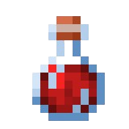
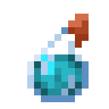
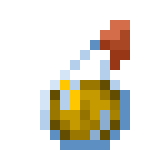
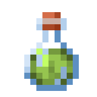
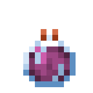
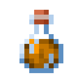
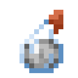
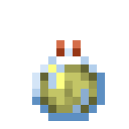

Poção de Cura
Vida Instantânea
Restaura: 8 ♥
Bebível

Poção de Agilidade
Velocidade II
+40% de Velocidade
Duração: 1:30
Arremessável

Poção de Força
Força II
+6 Dano de Ataque
Duração: 1:30
Arremessável

Visão Noturna
Visão Noturna
Duração: 8:00
Bebível

Regeneração
Regeneração II
Restaura 1 ♥ a cada 1.2s
Duração: 0:22
Prolongada

Resistência ao Fogo
Imunidade ao Fogo e Lava
Duração: 8:00
Bebível

Invisibilidade
Invisibilidade
Oculta o jogador (sem armadura)
Duração: 8:00
Bebível

Queda Lenta
Queda Lenta
Evita dano de queda
Duração: 4:00
Prolongada